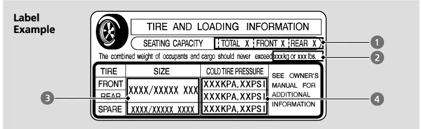
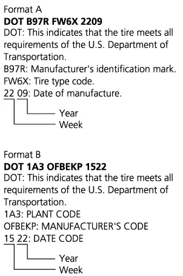
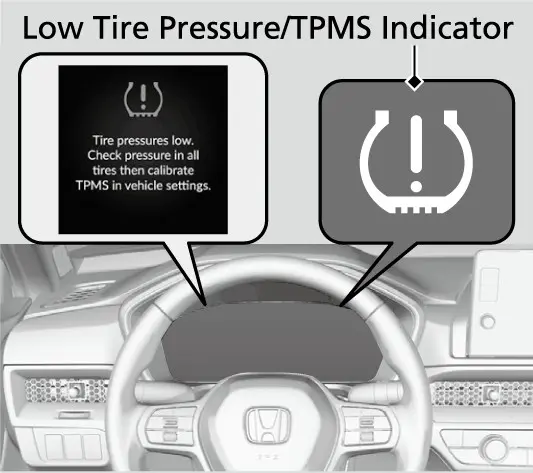
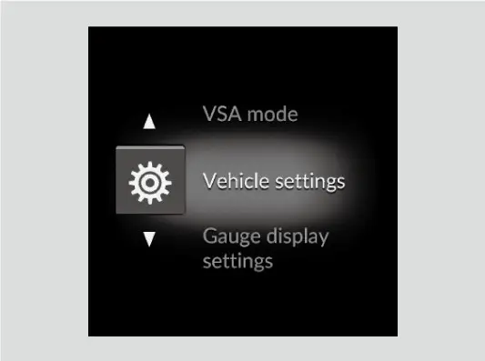
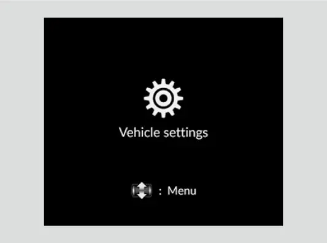
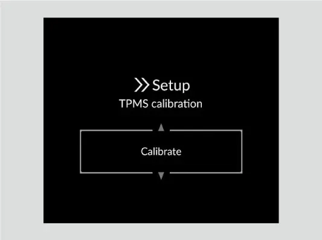
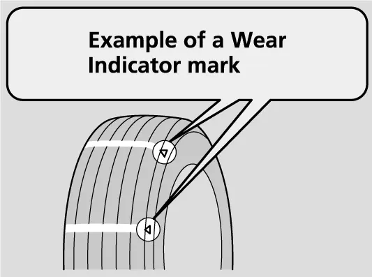
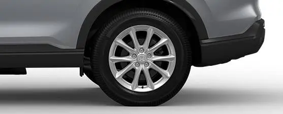
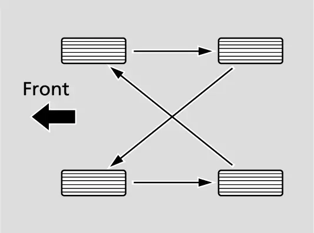
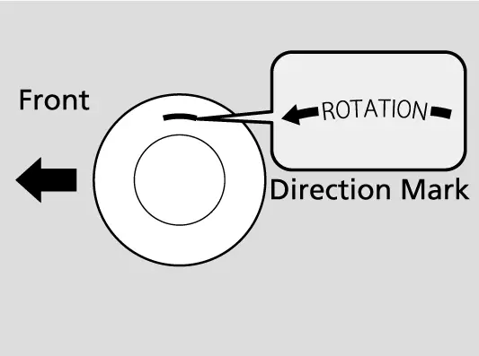

קאפיטל 16
רעדער און לופט-דרוק
זייטן 258–269 אינעם PDF
רעדער און טייערס אויפן EX
די אפיציעלע Honda ספעציפיקאציעס ווייזן אז דער EX קומט מיט 18-אינטש Sparkle Silver אלוי רעדער, און דער אונער'ס מאנואל גיט די ראד-גרייס ווי 18 x 7 1/2J. אויף די רעדער טראגט דער EX all-season טייערס (טייערס פאר אלע סעזאנען), גרייס 235/60R18 103H. אויב איר זעט CR-V אינפארמאציע וואס רעדט פון 17-אינטש טייערס, מיינט מען דעם LX, וואס האט 17-אינטש שטאל רעדער מיט דעקלעך און 235/65R17 104H טייערס. דעם LX'ס טייער-גרייס און לופט-דרוק זענען אנדערש, דערפאר מאכט שטענדיג זיכער אז איר לייענט די נומערן פאר 18 אינטש.
EX רעדער און טייערס ספעציפיקאציעס
| זאך | געווענליכע טייערס | קליינער ספעיר |
|---|---|---|
| טייער גרייס | 235/60R18 103H | T155/90D17 112M |
| ראד גרייס | 18 x 7 1/2J | 17 x 4T |
| קאלטער דרוק, פארנט | 35 psi (240 kPa) | 60 psi (420 kPa) |
| קאלטער דרוק, הינטן | 32 psi (220 kPa) | 60 psi (420 kPa) |
ווי אזוי לייענט מען די טייער גרייס
דער מאנואל דערקלערט די טייער-צייכנס מיט'ן ביישפיל P235/60 R18 102T. יעדע אות און נומער האט א באדייט:
- P: סארט קאר (P מיינט א פאסאזשיר קאר).
- 235: די ברייט פונעם טייער אין מילימעטער.
- 60: aspect ratio (פראפארציע), די הייך פון דער זייט-וואנט ווי א פראצענט פון דער ברייט פונעם טייער. א 60 זייט-וואנט איז 60 פראצענט אזוי הויך ווי דער טייער איז ברייט.
- R: קאנסטרוקציע קאוד (R מיינט radial).
- 18: דער דורכמעסער פונעם רים אין אינטשעס.
- 102: load index (וואג-אינדעקס), א נומער-קאוד וואס איז פארבונדן מיט דער מאקסימאלער וואג וואס דער טייער קען טראגן.
- T: speed symbol (גיכקייט סימבאל), אן אות-קאוד פאר דער מאקסימאלער גיכקייט רעיטינג.

אייערע אייגענע טייערס זאגן 235/60R18 103H. דאס מיינט 235 mm ברייט, א זייט-וואנט 60 פראצענט פון יענער ברייט, radial קאנסטרוקציע, און א 18-אינטש רים, מיט load index 103 און speed symbol H. דער ביישפיל אינעם מאנואל ווייזט אנשטאט דעם 102 און T. דער מאנואל איבערזעצט נישט די קאודס אויף פונט אדער mph, דערפאר טוט עס אויך נישט דאס בוך. דער כלל וואס איז וויכטיג איז פשוט: ווען מען טוישט טייערס, מוזן די נייע טייערס האבן די זעלבע גרייס און די זעלבע צייכנס.
דער קליינער ספעיר
דער EX האט א קליינעם ספעיר, T155/90D17 112M, אויף א 17 x 4T ראד. זיין דרוק איז 60 psi, אסאך העכער ווי די געווענליכע טייערס, און דער מאנואל וויל אז מען זאל אים טשעקן יעדן חודש צוזאמען מיט די אנדערע פיר. צוויי TPMS (טייער-דרוק אויפפאסונג סיסטעם) פונקטן גילטן פאר'ן ספעיר. דער low tire pressure אינדיקאטאר קען זיך אנצינדן ווען דער קליינער ספעיר איז אנגעטון, און מען קען נישט קאליברירן דעם סיסטעם מיט'ן ספעיר אויפן קאר. קאפיטל 18 ערקלערט שריט נאך שריט ווי אזוי צו טוישן א פלאטן טייער.
דער טייער און לאדונג אינפארמאציע לעיבל
די וויכטיגסטע טייער-אינפארמאציע אויפן קאר איז דער tire and loading information לעיבל אויפן דרייווער'ס טיר-ראם. עפנט די טיר פון דרייווער און קוקט אויפן ראנד פון דער עפענונג אינעם קערפער. לויטן מאנואל, ווייזט דער לעיבל:
- וויפיל מענטשן דער קאר קען נעמען. די ספעציפיקאציע זייט גיט 5: 2 פארנט און 3 הינטן.
- די גאנצע וואג וואס דער קאר קען טראגן. קיינמאל נישט איבערגיין.
- די ארגינעלע טייער גרייסן פאר פארנט, הינטן און ספעיר.
- דער ריכטיגער קאלטער טייער-דרוק פאר פארנט, הינטן און ספעיר.

פאר די 18-אינטש טייערס פונעם EX, גיט די ספעציפיקאציע זייט אינעם מאנואל א קאלטן דרוק פון 35 psi פארנט און 32 psi הינטן, און 60 psi פאר'ן קליינעם ספעיר. פארנט און הינטן איז דער דרוק טאקע אנדערש, דערפאר שטעלט נישט אלע פיר טייערס גלייך. דער מאנואל אליין שיקט אייך צום טיר-ראם לעיבל פאר טייער גרייס און דרוק, דערפאר באטראכט דעם לעיבל ווי דאס לעצטע ווארט. די Gross Vehicle Weight Rating (מאקסימאלע וואג פונעם קאר) און די פארנט און הינטן Gross Axle Weight Ratings (מאקסימאלע וואג אויף יעדע אקס) שטייען אויפן סערטיפיקאציע לעיבל, אויך אויפן דרייווער'ס טיר-ראם.
אנדערע צייכנס אויף דער זייט
דער tire identifci ation number (TIN, דער טייער אידענטיפיקאציע נומער) איז א גרופע אותיות און נומערן אויף דער זייט פונעם טייער. דער מאנואל ווייזט אז ער קען ערשיינען אין צוויי פארשידענע פארמאטן. די כללים אינעם מאנואל וועגן טייער-לעבן רעכענען פונעם טאג וואס דער טייער איז געמאכט געווארן, אבער די אפטיילונג ערקלערט נישט ווי אזוי צו לייענען יענע דאטע פונעם TIN. אויב איר זענט נישט זיכער, פרעגט א דילער.

אמעריקאנער טייערס האבן אויך DOT Uniform Tire Quality Grades (איינהייטלעכע קוואליטעט גרעידס). וואו זיי גילטן, שטייען זיי אויף דער זייט צווישן דעם אקסל פונעם טרעד און דעם ברייטסטן פלאץ פונעם טייער, למשל "Treadwear 200, Traction AA, Temperature A."
DOT טייער קוואליטעט גרעידס
| גרעיד | וואס עס מעסט | סקאלע |
|---|---|---|
| Treadwear (אפנוץ) | פארגלייכנדיגע אפנוץ אויף א רעגירונג טעסט-שטרעקע | 150 האלט אויס 1/2 1 מאל אזוי גוט ווי 100 |
| Traction (אנכאפן) | אפשטעלן גלייך פאראויס אויף א נאסן וועג | AA (בעסטע), A, B, C |
| Temperature (היץ) | ווידערשטאנד צו היץ און ווי גוט ער גיט אפ די היץ | A (בעסטע), B, C (געזעצליכער מינימום) |
דער treadwear נומער איז נאר א פארגלייך. ווי שנעל טייערס נוצן זיך אפ באמת, הענגט אפ אין ווי מען דרייווט, ווי מען היט אפ דעם קאר, די וועגן און דאס וועטער. דער traction גרעיד רעכנט נישט אריין גיכער ווערן, דרייען אין קורוון, hydroplaning (גליטשן אויף וואסער) אדער מאקסימאלע אנכאפן, און א טייער מיט א C קען האבן שוואכע אנכאפן. דער temperature גרעיד מיינט א טייער מיט ריכטיגן דרוק און נישט איבערלאדן. צו שנעל פארן, צו ווייניג לופט אדער איבערלאדן קען ברענגען צו היץ און מעגליך צו א טייער וואס פלאצט.
ווי אזוי טשעקט מען ריכטיג דעם דרוק
טשעקט שטענדיג דעם דרוק ווען די טייערס זענען קאלט. דער מאנואל זאגט אז "קאלט" מיינט געשטאנען כאטש דריי שעה, אדער געפארן ווייניגער ווי 1 mile (1.6 km), דערפאר איז די בעסטע צייט אינדערפרי איידער מען פארט ארויס. א הייסער טייער קען ווייזן 4 ביז 6 psi (30 ביז 40 kPa) מער ווי דער זעלבער טייער ווען ער איז קאלט. לאזט קיינמאל נישט ארויס לופט גלייך נאך א פאר נאר ווייל א טייער ווייזט הויך, ווייל דער דרוק פאלט צוריק אראפ ווען דער טייער קילט זיך אפ.
טשעקן און אויסגלייכן טייער-דרוק
- מאכט זיכער אז די טייערס זענען קאלט, דאס הייסט דער קאר איז געשטאנען כאטש דריי שעה אדער געפארן ווייניגער ווי 1 mile.
- נעמט אראפ דאס ווענטיל-היטל און דריקט פעסט צו דעם גאדזש צום ווענטיל.
- לייענט דעם גאדזש און פארגלייכט מיט'ן טיר-ראם לעיבל: 35 psi פארנט, 32 psi הינטן, און 60 psi פאר'ן ספעיר.
- לייגט צו אדער לאזט ארויס לופט ביז איר קומט צום באשטימטן דרוק, דערנאך לייגט צוריק אן דאס היטל.
- קאליברירט דערנאך דעם TPMS, ווי ערקלערט שפעטער אין דעם קאפיטל. ביי אמעריקאנער מאדעלן פאדערט דער מאנואל דאס יעדעס מאל ווען מען טוישט דעם טייער-דרוק.
די רוטין וואס דער מאנואל בעט
- יעדן טאג פאר'ן פארן: קוקט אויף אלע פיר טייערס. אויב איינער זעט אויס נידריגער ווי די אנדערע, טשעקט אים מיט א גאדזש.
- כאטש איינמאל א חודש, און פאר לאנגע רייזעס: מעסט אלע טייערס מיט א גאדזש, אויך דעם ספעיר.
- נאך יעדן טויש פון דרוק, ראטאציע אדער נייע טייערס: קאליברירט דעם TPMS.
אפילו טייערס אין גוטן צושטאנד קענען פארלירן 1 ביז 2 psi (10 ביז 20 kPa) א חודש. א טייער וואס איז געווען ריכטיג אין פרילינג קען זיין נידריג ביז זומער, אן קיין שום לעק.
טעמפעראטור טוישט אויך דעם דרוק. טייערס וואס מען האט אנגעפילט אין ווארעמע וועטער קענען ווערן צו נידריג אין קעלטערע וועטער, און טייערס וואס מען האט געשטעלט אין קאלטע וועטער קענען ווערן צו הויך ווען עס ווערט ווארעם. נידריגע דרויסנדיגע טעמפעראטור און טוישן אין הייך קענען אליין אנצינדן דעם low tire pressure אינדיקאטאר.
באקוקן די טייערס
יעדעס מאל וואס איר טשעקט דעם דרוק, קוקט אויך אויף די טייערס און ווענטילן. קוקט פאר די פאלגנדע זאכן:
- בייגלעך אדער אויסבלאזונגען אויף דער זייט אדער אינעם טרעד.
- שניטן, שפאלטן אדער ריסן אין דער זייט. טוישט דעם טייער.
- מען זעט שטאף אדער שנירלעך. טוישט דעם טייער.
- נעגל, שטיינער אדער אנדערע זאכן. נעמט זיי ארויס און טשעקט צי לופט גייט ארויס.
- אומגלייכער אפנוץ פונעם טרעד. לאזט א דילער טשעקן דעם alignment (ריכטונג פון די רעדער).
- צו שטארקער אפנוץ פונעם טרעד (זעט Wear indicators אונטן).
- ריסן אדער אנדערע שאדן ארום דעם ווענטיל.
טייערס מיט צו ווייניג לופט נוצן זיך אפ אומגלייך, שאטן דעם קאנטראל און דעם בענזין-פארברויך, און פלאצן גרינגער פון איבערהיצן. טייערס מיט צו פיל לופט פארן הארט, ווערן גרינגער געשעדיגט פון וועג-סכנות, און נוצן זיך אויך אפ אומגלייך. אויב איר שפירט א שטענדיגע ציטערניש בשעת'ן פארן, לאזט א דילער טשעקן די טייערס. נייע טייערס, און יעדער טייער וואס מען האט אראפגענומען און צוריק ארויפגעלייגט, דארף ווערן ריכטיג balanced (באלאנסירט).
דער Tire Pressure Monitoring System (TPMS)
דער CR-V'ס TPMS (טייער-דרוק אויפפאסונג סיסטעם) מעסט נישט דעם דרוק אין יעדן טייער. אנשטאט דעם, פארגלייכט ער ווי גרויס יעדער ראד איז אין דרייען און ווי ער דרייט זיך בשעת איר פארט. ווען ער באשליסט אז איינער אדער מער טייערס האבן באדייטנד צו ווייניג לופט, צינדט זיך אן דער low tire pressure/TPMS אינדיקאטאר און א מעלדונג ערשיינט אויפן 7-אינטש מעטער דיספליי. דער סיסטעם האט צוויי וויכטיגע גרענעצן: ער פאסט נישט אויף די טייערס ביי לאנגזאמע גיכקייט, און ער צינדט זיך נישט אן פון צו פיל לופט.


ווען ער קען זיך טועה זיין
ווייל דער סיסטעם ארבעט לויט ווי די רעדער דרייען זיך, האט ער בלינדע פלעקן. דער אינדיקאטאר קען זיך אנצינדן שפעט, אדער בכלל נישט, ווען:
- איר גיט שטארק גאז, ברעמזט שטארק אדער דרייט שארף.
- איר פארט אויף שנייאיגע אדער גליטשיגע וועגן.
- טייער טשעינס זענען אנגעטון.
- א טייער פארלירט שנעל לופט. דער TPMS איז נישט קיין blowout (פלאצן) דעטעקטאר.
ער קען זיך אויך אנצינדן ווען גארנישט לעקט: מיט'ן קליינעם ספעיר אנגעטון, מיט טשעינס, אדער מיט א שווערערע און מער אומגלייכע לאדונג ווי ביים קאליברירן, למשל ווען מען שלעפט א טרעילער. אויסמישן סארטן אדער גרייסן טייערס קען אויך שטערן אז ער זאל נישט ארבעטן ריכטיג, דערפאר ניצט די זעלבע גרייס און סארט טייער אויף אלע פיר רעדער.
וואס דער אינדיקאטאר מיינט
אויב דער אינדיקאטאר צינדט זיך אן און בלייבט שטענדיג אן, שטעלט זיך אפ און טשעקט אייערע טייערס וואס גיכער, און דערנאך פילט זיי אן ביזן ריכטיגן דרוק. פארן אויף א טייער מיט באדייטנד צו ווייניג לופט מאכט אים איבערהיצן און קען ברענגען אז דער טייער זאל פלאצן. עס פארמינערט אויך דעם בענזין-פארברויך און דאס לעבן פונעם טרעד, און קען שאטן דעם קאנטראל און די מעגליכקייט אפצושטעלן.
אויב דער אינדיקאטאר בלינקט בערך א מינוט און בלייבט דערנאך אן, האט דער TPMS א פעלער. די סדר חזר'ט זיך איבער ביי יעדן סטארט אזוי לאנג ווי דער פראבלעם איז דא, און דערווייל קען דער סיסטעם נישט כאפן נידריגן דרוק. איין געווענליכע סיבה איז נייע אדער אנדערע טייערס אדער רעדער וואס לאזן נישט דעם TPMS ארבעטן ריכטיג.
נאכדעם וואס מען פארבינדט צוריק די באטעריע, קען דער TPMS אינדיקאטאר זיך אנצינדן אין געל (amber) מיט א מעלדונג, צוזאמען מיט די VSA, געלע ברעמז סיסטעם, ACC און safety support אינדיקאטארן. פארט א קורצע שטרעקע מער ווי 12 mph (20 km/h) און זיי זאלן אויסגיין. אויב עפעס בלייבט אן, גייט צום דילער (זעט קאפיטל 20).


TPMS קאליברירונג
קאליברירונג לערנט דעם סיסטעם ווי "נארמאל" זעט אויס פאר אייערע טייערס. איר מוזט אנהייבן א קאליברירונג יעדעס מאל וואס איר טוישט דעם דרוק אין איינעם אדער מער טייערס, מאכט ראטאציע פון די טייערס, אדער טוישט איינעם אדער מער טייערס.
פאר'ן אנהייבן, שטעלט דעם קאלטן דרוק אין אלע פיר טייערס: 35 psi פארנט און 32 psi הינטן, לויטן לעיבל. מאכט זיכער אז דער קאר שטייט אינגאנצן, די טראנסמישאן איז אין P, און דער power mode איז ON. נעמט קודם אראפ טייער טשעינס. מען קען נישט קאליברירן ווען דער קליינער ספעיר איז אנגעטון.
דער EX האט דאס וואס דער מאנואל רופט דעם A-type meter (דער 7-אינטש דיספליי), דערפאר ניצט איר דאס לינקע ראדל (selector wheel). קאפיטל 6 ווייזט וואו דער home קנעפל און די ראדלעך געפינען זיך.

קאליברירן דעם TPMS (A-type meter)
- דריקט דעם home קנעפל צו אויסקלייבן Vehicle settings (קאר סעטינגס), דערנאך דריקט דאס לינקע ראדל. Vehicle settings ערשיינט אויפן דיספליי.
- דרייט דאס לינקע ראדל ביז TPMS calibration (TPMS קאליברירונג) ערשיינט.
- דריקט דאס לינקע ראדל. דער דיספליי טוישט זיך צו א סעטאפ סקרין מיט Cancel (אפזאגן) אדער Calibrate (קאליברירן).
- דרייט דאס לינקע ראדל צו Calibrate און דריקט עס. א Calibration started (קאליברירונג אנגעהויבן) סקרין ערשיינט, און דערנאך קערט זיך דער דיספליי צוריק צום customization מעניו. אויב ערשיינט אנשטאט דעם Calibration failed to start (קאליברירונג האט נישט געקענט אנהייבן), חזר'ט איבער דעם שריט.

די קאליברירונג ענדיגט זיך דערנאך אליין בשעת איר פארט. זי דארף בערך 30 מינוט צוזאמגערעכנטע פארן ביי 31 ביז 62 mph (50 ביז 100 km/h). עטליכע קורצערע הייוועי רייזעס רעכענען זיך צוזאם, דערפאר דארף עס נישט זיין איין לאנגע שטרעקע אן אויפהער. אין די צייט, אויב איר שטעלט דעם power mode אויף ON און רירט זיך נישט אין 45 סעקונדעס, קען דער low tire pressure אינדיקאטאר זיך אנצינדן אויף א קורצע צייט. דאס איז נארמאל און מיינט נאר אז די קאליברירונג איז נאך נישט פארטיג. אויב דאס לעמפל צינדט זיך אן ווען ריכטיג אנגעפילטע, באשטימטע געווענליכע טייערס זענען אנגעטון, לאזט א דילער טשעקן דעם קאר.

טרעד אפנוץ און עלטער פון טייערס
אייערע טייערס האבן איינגעבויטע wear indicators (אפנוץ-צייכנס) אין די הויפט קאנאלן. וואו א צייכן געפינט זיך, איז דער קאנאל בערך 1/16 אינטש (בערך 1.6 mm) ווייניגער טיף ווי אנדערש וואו. ווען דער טרעד איז אזוי אפגענוצט אז דער צייכן ווערט אנטבלויזט, טוישט דעם טייער, ווייל אפגענוצטע טייערס כאפן שלעכט אן אויף נאסע וועגן. קוקט איבער דער גאנצער ברייט פון יעדן טייער, אויך דער אינעווייניגסטער ראנד, וואו אומגלייכער אפנוץ קען זיך באהאלטן.

טייערס ווערן עלטער אפילו ווען דער טרעד זעט אויס גוט. דאס לעבן פון א טייער הענגט אפ אין ווי מען דרייווט, וועג צושטאנדן, די לאדונג אינעם קאר, לופט-דרוק, ווי מען האט אים אפגעהיטן, גיכקייט און סביבה צושטאנדן, אפילו ווען מען ניצט נישט די טייערס. ווען אייערע טייערס ווערן פינף יאר אלט, רעקאמענדירט מען זיי צו באקוקן יעדעס יאר. אלע טייערס, אויך דער ספעיר, דארף מען אראפנעמען 10 יאר נאכן טאג וואס זיי זענען געמאכט געווארן, נישט קוקנדיג אויף זייער צושטאנד אדער אפנוץ. דער ספעיר קען יארן לאנג אויסזען ווי נייע, דערפאר פארגעסט נישט זיין עלטער.
טוישן טייערס און רעדער
טוישט אייערע טייערס מיט radial טייערס פון דער זעלבער מידה, load range, speed rating און מאקסימאלער קאלטער דרוק רעיטינג ווי עס שטייט אויף דער זייט. טייערס פון אן אנדערער גרייס אדער קאנסטרוקציע קענען מאכן אז דער ABS (anti-lock braking system, די ברעמז וואס פארמיידט פארשליסן די רעדער(און Vehicle Stability Assist זאלן נישט ארבעטן ריכטיג)זעט קאפיטל 17). דאס בעסטע איז טוישן אלע פיר אויף איינמאל. אויב דאס גייט נישט, טוישט די פארנטיגע פאר אדער די הינטערשטע פאר צוזאמען. רעדער מוזן שטימען מיט די ארגינעלע ראד ספעציפיקאציעס, און Honda רעקאמענדירט די זעלבע פירמע, מאדעל און גרייס ווי די ארגינעלע טייערס.

טייער ראטאציע
ראטאציע רוקט איבער יעדן טייער צו א נייעם פלאץ, כדי דער אפנוץ זאל זיך צעטיילן גלייך און די טייערס זאלן לענגער האלטן. מאכט ראטאציע לויט די מעינטענענס מעלדונגען אויפן driver information interface (קאפיטל 19 ערקלערט ווי די מעלדונגען ערשיינען). דער מאנואל גיט צוויי סדרים: איינס פאר טייערס אן ראטאציע-צייכנס און איינס פאר טייערס מיט ראטאציע-צייכנס. קוקט אויף דער זייט צי עס איז דא א ראטאציע-צייכן און גייט נאך דעם פאסיגן דיאגראם.

Directional טייערס (טייערס פאר איין ריכטונג), וואס האבן א טרעד מוסטער פאר נאר איין ריכטונג, טאר מען נאר רוקן פון פארנט קיין הינטן, קיינמאל נישט פון איין זייט צו דער אנדערער. מען מוז זיי ארויפלייגן מיט'ן ראטאציע-צייכן פאראויס. ווען די רעדער ווערן צוריק ארויפגעלייגט, איז דער באשטימטער wheel nut torque (ווי שטארק צו פארדרייען די ראד-נאטן) פאר די געווענליכע טייערס (m·108 N) ft·80 lbf, דערפאר בעט דעם שאפ צו פארדרייען ביז יענער ציפער. ביי אמעריקאנער מאדעלן, פאדערט יעדע ראטאציע א נייע TPMS קאליברירונג.

ווינטער טייערס און טשעינס
אויף שנייאיגע אדער פארפרוירענע וועגן, זאגט דער מאנואל צו ניצן all-season טייערס מיט'ן צייכן M+S, שניי טייערס אדער טייער טשעינס, צו פארן לאנגזאמער, און צו האלטן מער אפשטאנד פון אנדערע קארס. זייט באזונדערס צארט מיט'ן סטירינג און די ברעמזן כדי נישט צו גליטשן. אויב איר קלייבט אויס ספעציעלע ווינטער טייערס, נעמט די זעלבע גרייס און load range ווי די ארגינעלע און לייגט זיי ארויף אויף אלע פיר רעדער. איבערגיין אויף ווינטער טייערס רעכנט זיך ווי א טייער-טויש, דערפאר קאליברירט דערנאך דעם TPMS. ווי אזוי צו פארן אין ווינטער ווערט ערקלערט אין קאפיטל 24.
אויב איר דארפט טשעינס, לייגט זיי אן נאר אויף די פארנטיגע טייערס. ווייל דער CR-V האט ווייניג פלאץ ארום די טייערס, רעקאמענדירט Honda שטארק דעם קאבל-סארט SCC RADIAL CHAIN TC2212MM פאר 235/60R18 טייערס ווי אייערע. (דער 17-אינטש LX ניצט TC2111MM.) גייט נאך די אנווייזונגען פונעם טשעין פאבריקאנט און לייגט אן די טשעינס אזוי ענג ווי איר קענט. טשעקט אז זיי רירן נישט אן די ברעמז-רערן אדער די סוספענשאן, פארט לאנגזאם, און האלט זיך צו די גיכקייט גרענעצן פונעם טשעין פאבריקאנט.
אפטע פראגעס
פראגע: פארוואס איז דער דרוק פארנט העכער ווי הינטן?
ענטפער: Honda באשטימט 35 psi פארנט און 32 psi הינטן פאר די 18-אינטש טייערס פונעם EX. גייט נאך דעם טיר-ראם לעיבל אנשטאט צו שטעלן אלע פיר טייערס גלייך.
פראגע: מיין טייער ווייזט 38 psi גלייך נאך א פאר אויפן הייוועי. זאל איך ארויסלאזן לופט?
ענטפער: ניין. א הייסער טייער קען ווייזן 4 ביז 6 psi מער ווי ווען ער איז קאלט. טשעקט נאכאמאל נאכדעם וואס דער קאר איז געשטאנען כאטש דריי שעה.
פראגע: ווארנט מיך דער TPMS אויב א טייער האט צו פיל לופט?
ענטפער: ניין. דער אינדיקאטאר צינדט זיך אן נאר פאר באדייטנד צו ווייניג לופט, און ער פאסט נישט אויף די טייערס ביי לאנגזאמע גיכקייט.
פראגע: קען איך קאליברירן דעם TPMS ווען דער קליינער ספעיר איז אנגעטון?
ענטפער: ניין. מען קען נישט קאליברירן ווען דער קליינער ספעיר איז אנגעטון, און דער אינדיקאטאר קען זיך אנצינדן בשעת ער איז אויפן קאר.
פראגע: דאס TPMS לעמפל האט געבלינקט א מינוט און איז דערנאך געבליבן אן. וואס מיינט דאס?
ענטפער: דער סיסטעם האט א פעלער און קען נישט כאפן נידריגן דרוק. לאזט א דילער עס טשעקן, באזונדערס אויב איר האט לעצטנס געטוישט טייערס אדער רעדער.
פראגע: מיין טרעד זעט נאך אויס גוט, אבער די טייערס זענען אלט. ווען זאל איך זיי טוישן?
ענטפער: לאזט זיי באקוקן יעדעס יאר פון פינף יאר אלט, און נעמט אראפ אלע טייערס, אויך דעם ספעיר, 10 יאר נאכן טאג וואס זיי זענען געמאכט געווארן.
הויפט פונקטן
- EX טייערס זענען 235/60R18 103H אויף 18 x 7 1/2J רעדער. די 17-אינטש ציפערן געהערן צום LX.
- קאלטער דרוק איז 35 psi פארנט, 32 psi הינטן און 60 psi פאר'ן ספעיר. דער טיר-ראם לעיבל איז דאס לעצטע ווארט.
- טשעקט דעם דרוק קאלט, כאטש איינמאל א חודש און פאר לאנגע רייזעס, אויך דעם ספעיר.
- קאליברירט דעם TPMS נאך יעדן טויש פון דרוק, ראטאציע אדער טייער-טויש. עס דארף בערך 30 מינוט פארן ביי 31 ביז 62 mph.
- א TPMS לעמפל וואס שטייט אן מיינט נידריגער דרוק. א לעמפל וואס בלינקט און בלייבט דערנאך אן מיינט א פעלער אינעם סיסטעם.
- טוישט טייערס ווען די אפנוץ-צייכנס ווייזן זיך, אדער 10 יאר נאכן מאכן, מיט דער זעלבער גרייס, load range און speed rating.
- מאכט ראטאציע ווי די מעינטענענס מעלדונגען ווייזן, און פארדרייט די ראד-נאטן ביז ft·80 lbf.
- ניצט ווינטער טייערס אויף אלע פיר רעדער, און טשעינס (SCC TC2212MM) נאר אויף די פארנטיגע טייערס.